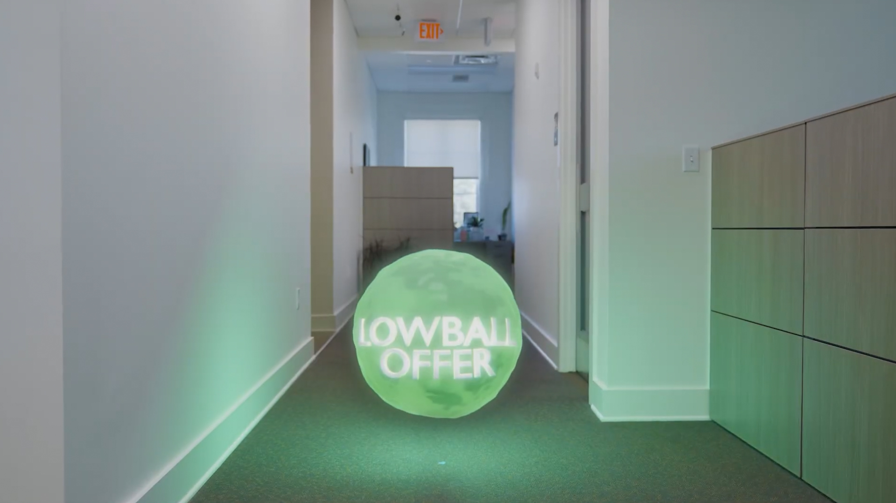
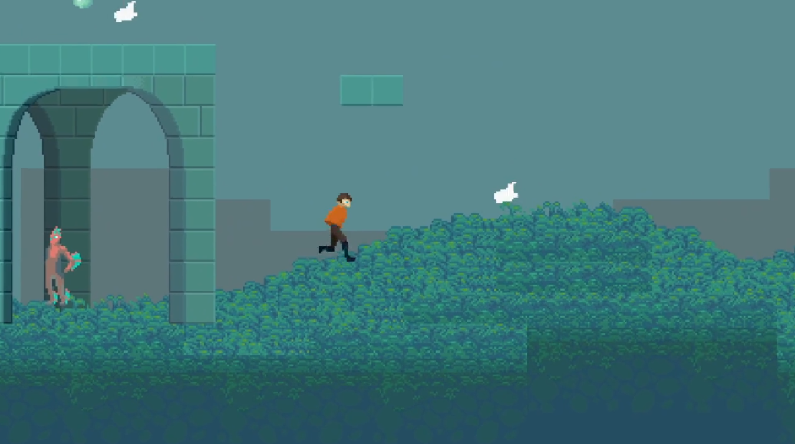
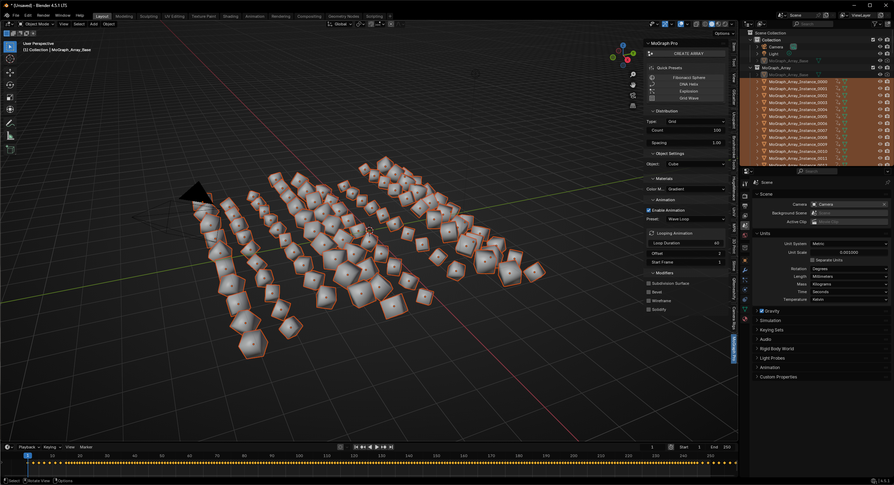

Featured Work
Visual effects, audio design, and creative projects across multiple mediums

Film & TV VFX
15 years of compositing and matte painting work across various film and television productions. Creating seamless visual effects that serve the story.

3D & Animation
Environment design, FX, and motion graphics. Bringing ideas to life through three-dimensional artistry.

Music & Sound Design
Composing music and designing soundscapes that enhance narrative. Creating audio experiences from synthesis, sampling, and field recording.

Creative Coding
Python scripts and tools for Blender and creative applications. Building utilities that streamline workflows and unlock new creative possibilities.